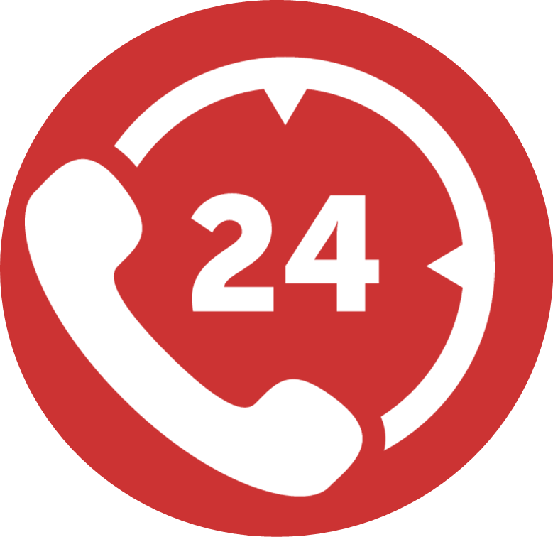
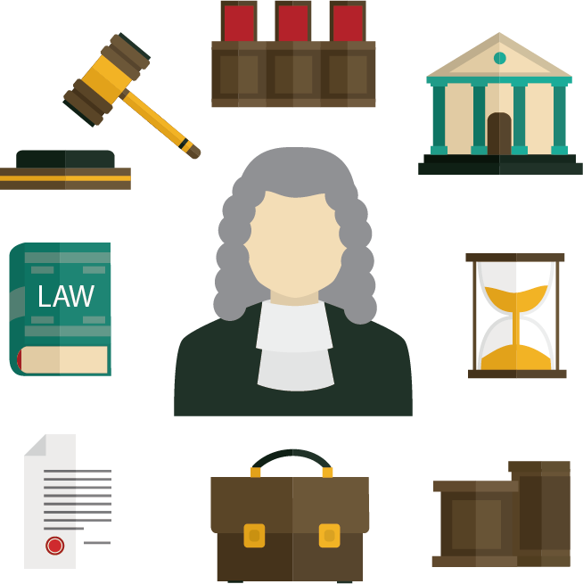

An anti-rape website plays a pivotal role in addressing the complexities of sexual violence and supporting survivors. By providing a range of resources, including professional counseling, legal assistance, and support groups, the website creates a comprehensive safety net for victims. The immediate availability of information and support fosters a sense of empowerment, helping individuals feel less isolated in their experiences. The website also serves as an educational platform, raising awareness about consent, prevention strategies, and the legal rights of survivors. This proactive approach not only aids in individual recovery but also contributes to broader societal change by challenging the stigma surrounding sexual violence.
Moreover, the anonymity of online resources allows survivors to seek help without fear of judgment or exposure, encouraging those who might otherwise remain silent to come forward. The site often features personal stories and testimonials, which can be incredibly validating for visitors, reinforcing that they are not alone in their struggles. By creating a supportive online community, the website encourages dialogue and understanding, fostering a culture that prioritizes respect and consent. Ultimately, the impact of an anti-rape website extends beyond immediate support; it inspires a collective commitment to ending sexual violence and promoting healing for all survivors.
Service
Price
Image
Buy Now
24/7 Hotline Support
The 24/7 hotline support offered by the anti-rape website serves as a vital lifeline for survivors of sexual violence. Staffed by trained professionals, the hotline provides immediate, confidential assistance to individuals seeking help. Callers can access emotional support, practical resources, and information on legal rights and options.
$99$50

Professional Counseling
Professional counseling offers survivors a safe space to process their experiences and emotions. Trained therapists provide tailored support, helping individuals navigate trauma, build coping strategies, and foster resilience. This compassionate guidance is essential for healing,empowering victims to reclaim their lives and move forward with confidence
$35$25
Legal Assistance
Legal assistance is crucial for survivors seeking justice and protection. Dedicated professionals help navigate the complexities of the legal system, offering guidance on reporting incidents, obtaining restraining orders, and pursuing cases in court. This support ensures victims understand their rights and options, fostering a sense of empowerment in their journey toward justice.
$20$15

Support Groups
Support groups create a community where survivors can share their experiences and connect with others who understand their struggles. These safe spaces promote healing through shared stories, fostering empathy and validation. Participants gain strength from one another, developing a sense of belonging and resilience that aids in their recovery journey.